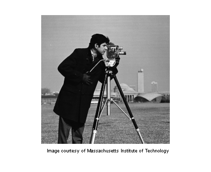
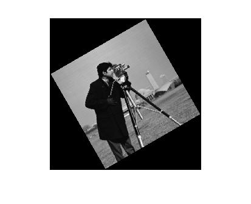
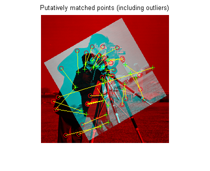
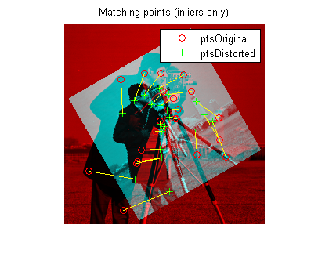
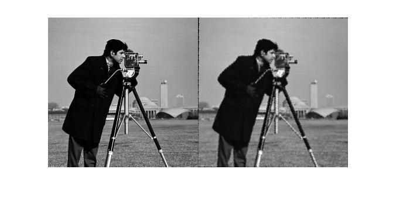

特徴の自動マッチングを使用したイメージの回転およびスケールの検出
この例は、「歪んだイメージの回転およびスケールを検出」という例と非常によく似ています。2 つのイメージを手動でレジストレーションするのではなく、Computer Vision System Toolbox™ の特徴ベースの手法を使用してレジストレーション プロセスを自動化します。
この例では、detectSURFFeatures および vision.GeometricTransformEstimator System object を使用して、歪んだイメージの回転角度および倍率を復元します。その後、歪んだイメージを変換して元のイメージを復元します。
目次
手順 1: イメージの読み取り
イメージをワークスペースに読み取ります。
original = imread('cameraman.tif'); imshow(original); text(size(original,2),size(original,1)+15, ... 'Image courtesy of Massachusetts Institute of Technology', ... 'FontSize',7,'HorizontalAlignment','right');
手順 2: イメージのサイズ変更と回転
scale = 0.7; J = imresize(original, scale); % Try varying the scale factor. theta = 30; distorted = imrotate(J,theta); % Try varying the angle, theta. figure, imshow(distorted)
入力イメージのスケールと回転を変えて実験できます。ただし、特徴検出器が十分な特徴を検出できなくなるまでは、スケールを変更できる量には制限があります。
手順 3: イメージ間で一致する特徴の検出
両方のイメージで特徴を検出します。
ptsOriginal = detectSURFFeatures(original); ptsDistorted = detectSURFFeatures(distorted);
特徴の記述子を抽出します。
[featuresIn validPtsIn] = extractFeatures(original, ptsOriginal); [featuresOut validPtsOut] = extractFeatures(distorted, ptsDistorted);
その記述子を使用して特徴を一致させます。
index_pairs = matchFeatures(featuresIn, featuresOut);
各イメージの対応するポイント位置を取得します。
matchedOriginal = validPtsIn(index_pairs(:,1)); matchedDistorted = validPtsOut(index_pairs(:,2));
ポイントの一致を示します。外れ値があることに注意してください。
cvexShowMatches(original,distorted,matchedOriginal,matchedDistorted);
title('Putatively matched points (including outliers)');
 手順 4: 変換の推定
統計的にロバストな RANdom SAmpling Consensus (RANSAC) アルゴリズムを使用して、一致したポイントの組に相当する変換行列を生成します。変換行列の計算中に外れ値を削除します。
Computer Vision System Toolbox からの System object の使用に注意してください。System object を使用するには、最初に System object を構築し、構成してから step() メソッドを起動して、メイン アルゴリズムを実行します。
geoTransformEst = vision.GeometricTransformEstimator; % defaults to RANSAC % Configure the System object. geoTransformEst.Transform = 'Nonreflective similarity'; geoTransformEst.NumRandomSamplingsMethod = 'Desired confidence'; geoTransformEst.MaximumRandomSamples = 1000; geoTransformEst.DesiredConfidence = 99.8; % Invoke the step() method on the geoTransformEst object to compute the % transformation from the distorted to the original image. You % may see varying results of the transformation matrix computation because % of the random sampling employed by the RANSAC algorithm. [tform_matrix inlierIdx] = step(geoTransformEst, matchedDistorted.Location, ... matchedOriginal.Location);
変換行列の計算で使用した一致するポイントの組を表示します。
cvexShowMatches(original,distorted,matchedOriginal(inlierIdx),... matchedDistorted(inlierIdx),'ptsOriginal','ptsDistorted'); title('Matching points (inliers only)');
手順 5: スケールと角度の解
幾何学的変換行列 TFORM_MATRIX を使用して、スケールと角度を復元します。歪んだイメージから元のイメージへの変換を計算したため、歪んだイメージを復元するには逆数を計算しなければなりません。
Let sc = s*cos(theta) Let ss = s*sin(theta)
Then, Tinv = [sc -ss 0; ss sc 0; tx ty 1]
where tx and ty are x and y translations, respectively.
前の手順で取得した行列は、暗黙の [0 0 1]' 最終列以外のコンパクトな 3 行 2 列の無反射相似変換を記述しています。逆演算にはこの列が必要です。
tform_matrix = cat(2,tform_matrix,[0 0 1]'); % pad the matrix
Tinv = inv(tform_matrix);
ss = Tinv(2,1);
sc = Tinv(1,1);
scale_recovered = sqrt(ss*ss + sc*sc)
theta_recovered = atan2(ss,sc)*180/pi
scale_recovered =
0.7002
theta_recovered =
30.0021
復元された値は「手順 2:イメージのサイズ変更と回転」で選択したスケール値および角度値と一致しなければなりません。
手順 6: 元のイメージの復元
歪んだイメージを変換して元のイメージを復元します。
t = maketform('affine', double(tform_matrix)); D = size(original); recovered = imtransform(distorted,t,'XData',[1 D(2)],'YData',[1 D(1)]);
モンタージュで recovered と original を並べて比較します。
figure, imshowpair(original,recovered,'montage')
 歪みと復元のプロセスであるため、recovered (右) の画質は original (左) の画質と一致しません。特に、イメージを縮小すると情報が失われます。境界線周辺が不自然になるのは、変換の精度が限られているためです。「手順 4:イメージ間で一致する特徴の検出」でより多くのポイントを検出していれば、変換の精度は高くなります。たとえば、コーナー検出器 vision.CornerDetector を使用して、ブロブを検出する SURF 特徴検出器を補完できます。また、イメージの内容とイメージのサイズは、検出される特徴の数に影響を与えます。